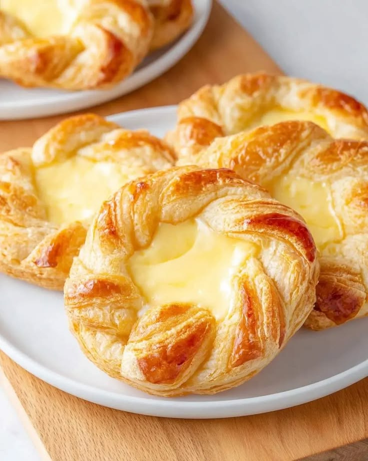
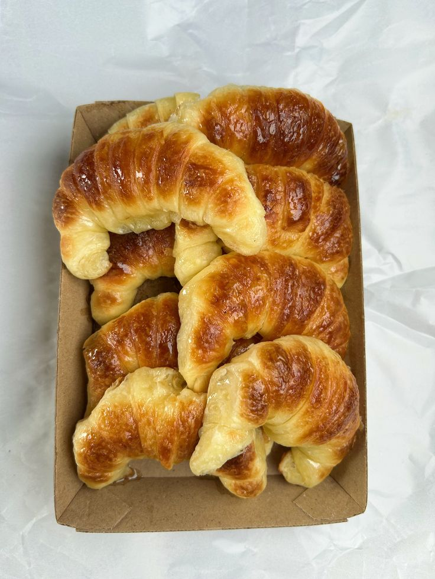

CROISSANT
The Art Of Layered Pastries
THE HISTORY OF CROISSANT
The transformation from a dense, brioche-like roll to the flaky, layered pastry known today occurred in the late 19th and early 20th centuries. French bakers adopted the shape but innovated by using laminated yeast dough instead of brioche. The first recorded recipe for this modern version appeared in 1905 or 1906, with baker Sylvain Claudius Goy often credited for publishing a definitive recipe in 1915.

THE CROISSANT FAMILY

Pain Au Chocolat
Meaning "Chocolate Bread", Pain Au Chocolat is a layered, crunchy and flaky pastry filled with gooey chocolate.

Danish Pastry
The Danish Pastry is a Croissant-like dough shaped like a basket filled with custard, usually topped with berries.

Medialunas
Very similar to croissants. It's name means "Half Moon" given it's shape. It's more fluffy and less flaky than a croissant.